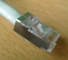
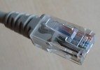
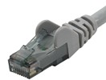

Le câble à paires torsadées
Nous aborderons ici les diverses caractéristiques qui différencient les câbles à paires torsadées. Par abus de langage, ces câbles sont souvent appelés câbles RJ45 qui est en fait le nom de l'embout, ou encore câble Ethernet qui est le nom d'une technologie.
Quand un courant passe dans un brin, un champ magnétique se forme autour de ce fil perturbant ainsi la transmission des données qui passent dans les fils alentour (ces interférences sont appelées diaphonie). Le câble à paires torsadées est composé de plusieurs brins enroulés en hélice l'un autour de l'autre afin de minimiser cette diaphonie.
Le câble à paires torsadées que nous utilisons tous les jours pour nous connecter à Internet possède 4 paires de brins.
Chaque paire possède une couleur. Ce qui nous donne les couples :
vert / blanc-vert ;
orange / blanc-orange ;
bleu / blanc-bleu ;
brun / blanc-brun.
Utilisation des paires
Nos câbles RJ45 possèdent pour la plupart 4 paires de fils, soit un total de 8 fils. Certains types de câbles utilisent une paire (un fil pour la réception et un pour l'émission), d'autres utilisent 2 paires (2 fils pour la réception et 2 pour l'émission).
Mais s'ils utilisent 4 des 8 fils, à quoi servent les autres fils ?
Vous en faites ce que vous voulez de ces 4 fils restants. :p
Souvent ils restent inutilisés, mais de plus en plus (surtout dans les nouvelles maisons) le câble est utilisé comme cela :
deux paires pour Internet ;
une paire pour la télé ;
une paire pour le téléphone.
L'avantage est donc de faire un câble (ou une prise) unique pour tous les appareils de la maison.
Monobrin vs multibrin
Les brins de cuivre d'un câble RJ45 peuvent être soit monobrin soit multibrins :
le câble monobrin est constitué d'un seul brin de cuivre épais. Il a le gros désavantage de n'être pas très souple, mais il permet de transporter le signal sur une plus grande distance. Il sera donc utilisé pour un câblage permanent (murs et plafonds des maisons ou immeubles par exemple) ;
le câble multibrins est constitué d'un multitude de minces fils de cuivre torsadés. Il est plus souple que le monobrin, mais le signal s'affaiblit plus vite. Il n'est donc pas adapté pour relier 2 appareils séparés par une grande distance. Il est toutefois moins cher que le monobrin.
Le revêtement du câble
Les câbles RJ45 sont entourés d'un revêtement (la gaine). En général cette gaine est faite en PVC, c'est ce type de gaine que nous avons sur nos câbles. Mais dans des cas bien particuliers, il se peut que vous deviez utiliser un câble avec un revêtement en plenum. Le câble plenum est un câble ignifugé, c'est-à-dire qu'il résiste mieux au feu que le câble PVC, qui lui fond. Le câble plenum est obligatoire si ce câble passe par le système d'aération d'un immeuble, le plancher, etc.
L'avantage d'un tel câble est qu'il résiste bien à la chaleur et ne dégage pas de fumée toxique lors de sa combustion grâce à son revêtement en téflon. Il est bien sûr plus cher qu'un simple câble en PVC.
Les manchons
Les manchons d'un câble ont pour buts de protéger le clip de l'embout, ainsi que de maintenir ce même embout. L'embout est facultatif, de nombreux câbles n'en possèdent pas, cependant je conseille d'en mettre pour les câbles qui seraient susceptibles d'être déplacés, car le clip de l'embout se casse très facilement, et en plus ça rajoute une touche d'esthétique à votre câble. ^^
Nom | Description | Photos |
|---|---|---|
Sans manchons. | Ne protège rien. |  |
Manchon simple. | Maintient l'embout. |  |
Manchon « surmoulage ». | Maintient l'embout et protège le clip. | |
Manchon à « oreillettes ». | Maintient l'embout et protège le clip. |  |
À noter que les manchons sont souvent disponibles en plusieurs couleurs. Vous pouvez donc organiser votre réseau avec des couleurs. Par exemple rouge pour le serveur, bleu pour Internet, jaune pour le 1er étage, etc.
Câble droit et croisé
Un câble droit et un câble croisé sont deux types de câbles distincts :
le câble droit est celui que vous utilisez tous les jours, en effet il permet de relier 1 appareil à un hub (Concentrateur) ou un switch (Commutateur réseau). C'est donc le câble que vous utilisez pour connecter votre ordinateur à votre routeur ou box ;
le câble croisé sert à relier directement 2 appareils sans passer par un quelconque switch ou hub. Il sert donc à relier soit 2 switchs ensemble, ou encore 2 ordinateurs ensemble par exemple.
La plupart des cartes réseaux et switchs s'adaptent automatiquement au type de câble branché. Il croise ou décroise le câble automatiquement, c'est pourquoi vous pouvez très bien relier 2 ordinateurs ensemble avec un câble droit.
Les catégories de câbles
Tous les câbles ne se valent pas et ont des caractéristiques bien précises selon l'utilisation à laquelle ils sont destinés.
Ci-dessous un tableau récapitulant le débit du câble selon sa catégorie.
Catégorie | Débit | Fréquence | Utilisation |
|---|---|---|---|
1 | 1 Mbps | ? | Communications téléphoniques. |
2 | 4 Mbps | 2 MHz | Utilisé essentiellement pour les Token Ring. |
3 | 16 Mbps | 16 MHz | Essentiellement pour la téléphonie sur le marché commercial. |
4 | 20 Mbps | 20 MHz | Utilisé essentiellement pour les Token Ring. |
5 | 100 Mbps (2 paires) | 100 MHz | Téléphonie et réseaux à 100 Mbps. |
5 | 1000 Mbps (4 paires) | 100 MHz | Téléphonie et réseaux à 1000 Mbps. |
5e (enhanced) | 1000 Mbps (2 paires) | 100 Mhz | Téléphonie et réseaux à 1000 Mbps. |
6 | 1000 Mbps (2 paires) | 250 Mhz | Téléphonie et réseaux à 1000 Mbps sur |
6a | 10 000 Mbps (2 paires) | 500 Mhz | Téléphonie et réseaux à 10 000 Mbps |
7 | 10 000 Mbps | 600 Mhz | Elle permet l'acheminement d'un signal de télévision |
Dans ce tutoriel nous parlerons uniquement du câble cat6 et cat5. En effet, il est très peu probable que vous soyez confrontés à des câbles de catégories 1,2,3 ou 4.
Les câbles auxquels nous nous intéresserons sont dit rétro-compatible, un câble de catégorie 6 est parfaitement compatible avec un câble de catégorie 5 ou 5e.
Le blindage
Le blindage d'un câble est quelque chose de souvent négligé mais qui peut avoir des répercussions plus ou moins grandes sur le débit de votre réseau selon votre environnement.
Il existe plusieurs blindages suivant l'utilisation. En effet dans un environnement riche en interférences électromagnétiques, il sera nécessaire d'adopter un bon blindage pour ne pas voir son débit diminuer.
Voici deux tableaux qui expliquent les blindages disponibles selon le câble choisi :
Câble cat5e:
Blindage | Nom complet | Description |
|---|---|---|
UTP | Unshielded Twisted Pair | Aucun blindage. |
FTP (ou F/UTP) | Folded Twisted Pair | La gaine du câble est blindée par un écran d'aluminium. |
STP (ou U/FTP) | Shielded Twisted Pair | Blindage de chacune des 4 paires par un écran en aluminium, mais la gaine n'est pas blindée. |
SFTP (SF/UTP) | Shielded Folded Twisted Pair | La gaine du câble est blindée par un écran d'aluminium et une tresse de cuivre. |
Câble cat6:
Blindage | Nom complet | Description |
|---|---|---|
UTP | Unshielded Twisted Pair | Aucun blindage. |
FTP (ou F/UTP) | Folded Twisted Pair | La gaine du câble est blindée par un écran d'aluminium. |
SFTP (ou S/FTP, ou SSTP) | Shielded Folded Twisted Pair | Blindage de chacune des 4 paires par un écran en aluminium. |
FFTP (ou F/FTP) | Folded Folded Twisted Pair | Blindage de chacune des 4 paires par un écran en aluminium. |
Bien évidemment plus le blindage est résistant aux interférences, plus le câble est cher.
Dans une maison, vous pouvez vous contenter d'utiliser F/UTP, mais veillez toutefois à les éloigner des sources électromagnétiques (Wi-Fi, moteur électrique...).